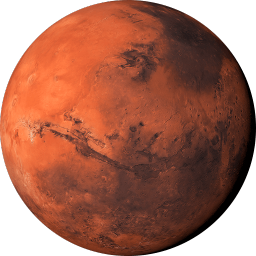
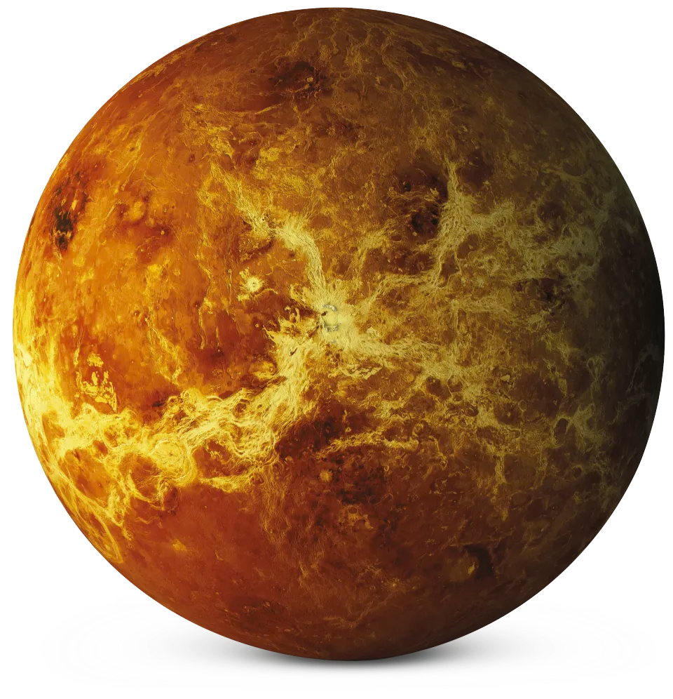

- Mars has the tallest volcano in the solar system, Olympus Mons, which is about 13.6 miles high!

- Venus is the hottest planet with a surface temperature of over 450°C (842°F), hotter than Mercury,
even
though it's farther from the Sun.

- Jupiter is so large that all other planets in the solar system could fit inside it.

- Uranus rotates on its side, making its rotation axis nearly parallel to its orbital plane.

- Mercury has no atmosphere, and temperatures can vary from 800°F during the day to -290°F at night!